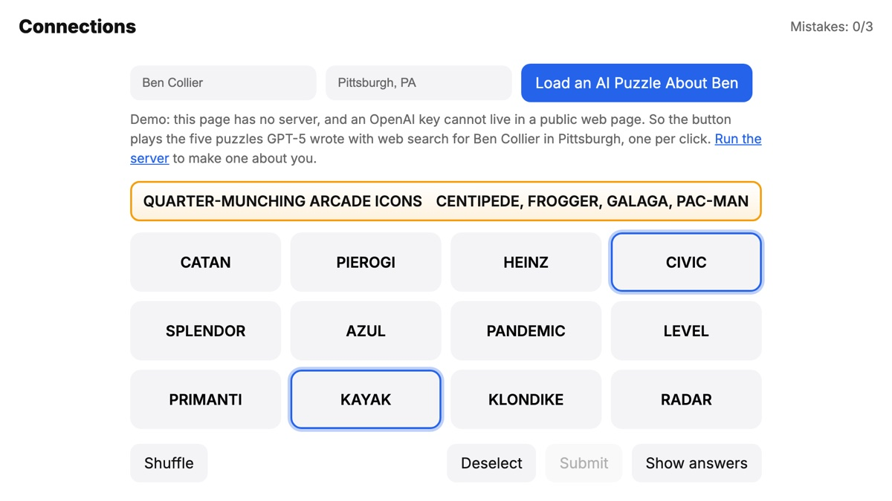
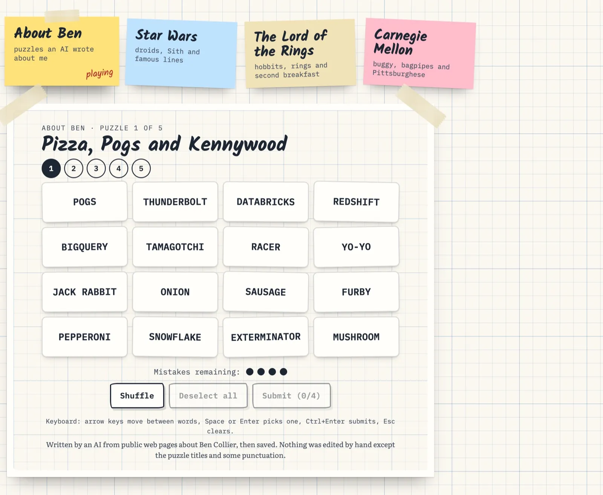
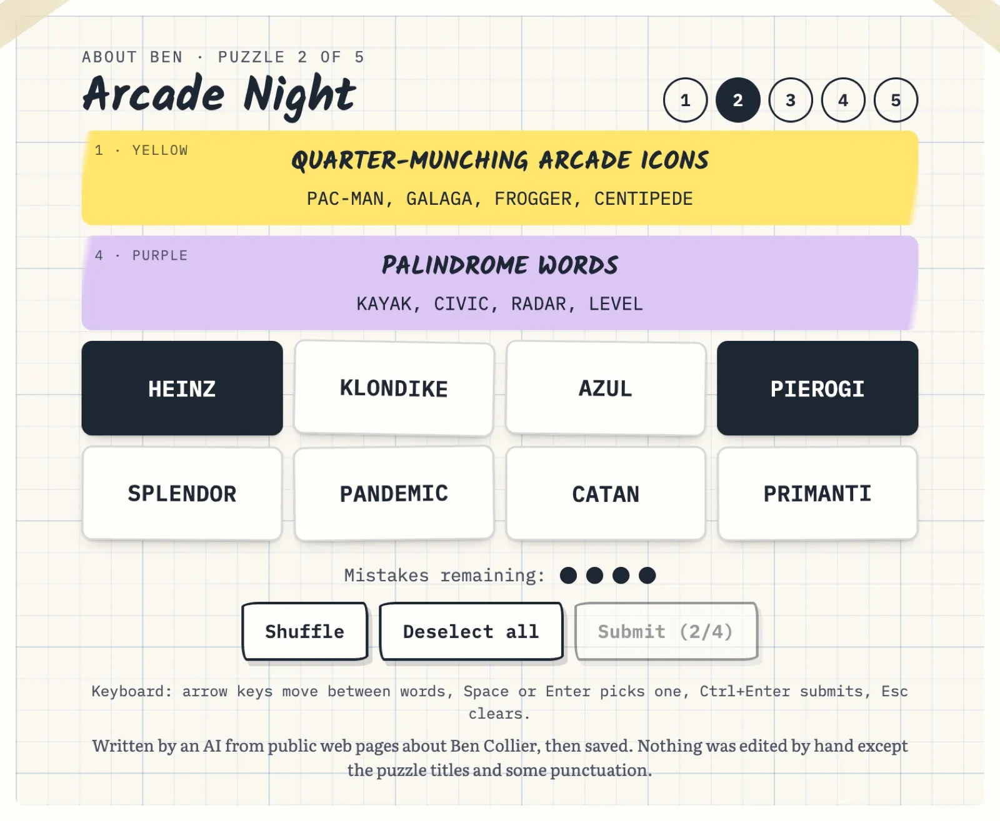
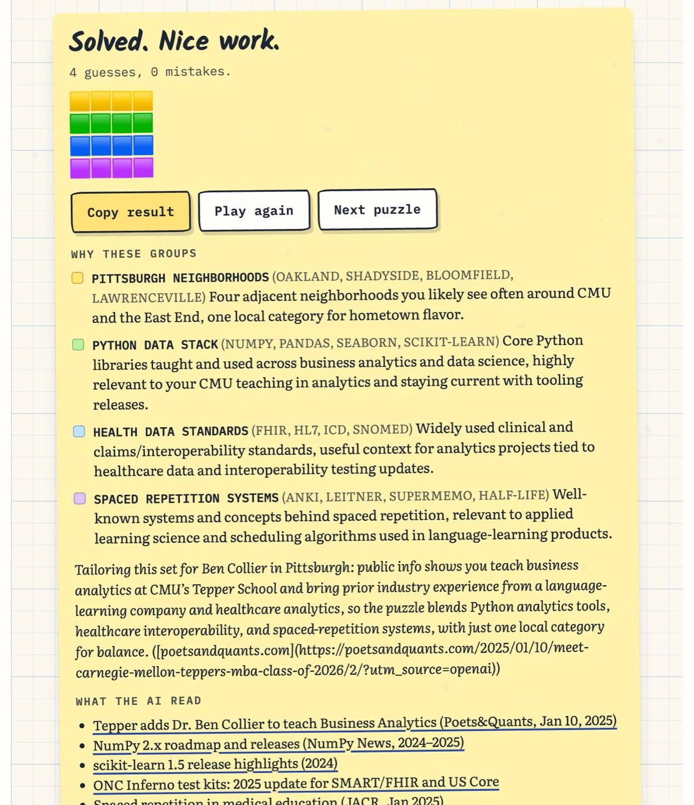
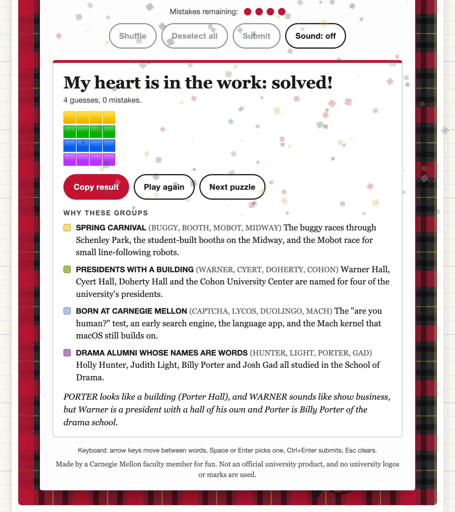

Browser game · September 2025
Connections About You


JavaScript, Node.js, Express, OpenAI GPT-5 with web search, gpt-oss-120b, Playwright, Claude Code
A word game in the style of the NYT's Connections. An AI writes puzzles about a person: type a name and a town, and GPT-5 searches the web and builds four groups of four from that person's work, their city, and some guesses about their tastes. When the game ends, it explains each group and links to what it read. Next to five puzzles it wrote about me, I added three packs I wrote by hand, for Star Wars, The Lord of the Rings and Carnegie Mellon, each in its own animated theme.
What it is
It is a word game in the style of the New York Times' Connections. You get sixteen words and four mistakes, and you sort the words into four groups of four. The groups get harder from yellow to purple.

The twist is who writes the puzzles. Type a name and a town, and GPT-5 searches the web and builds four groups from that person's work, their city, and some guesses about their tastes. When the game ends it explains each group and links to what it read. The About Ben theme is five puzzles it wrote about me, saved as they came. Palindromes next to Pittsburgh snacks, Kennywood rides next to data warehouses.




The themes
Next to the AI puzzles I wrote three packs by hand, three puzzles each, for Star Wars, The Lord of the Rings and Carnegie Mellon. Each one plays in its own animated theme, drawn with CSS, SVG and canvas. Star Wars opens with a crawl and jumps to hyperspace when you solve a group. The Lord of the Rings sits on parchment with a map border that inks itself in. Carnegie Mellon is a tartan, and a bagpipe marches across the bottom when you win. There are no logos or film art.


How a puzzle is made
The first version, in September 2025, was a small Node and Express server. It builds one prompt, calls the model, and checks the answer. The prompt reads like a brief to a puzzle editor:
- Tone. A party game, family friendly. It may guess at hobbies and tastes, as long as the guesses are kind and not sensitive.
- Rules that keep it a game and not a resume. At least two groups about fun things, at most one about work, at most one about the place. Sixteen different words. Public information only.
- Examples. Twelve real Connections groups from a file of past puzzles, to show the format and how hard each color should be.
- A color rubric, from yellow (straightforward) to purple (wordplay), and the exact JSON to send back.
Then code checks the answer. It pulls the JSON out of the reply, checks it against a schema, and confirms sixteen different words, with punctuation stripped so R2-D2 and R2 D2 count as the same word. If a check fails, the server asks again and says what was wrong, up to two retries.
Left alone, the model kept reaching for the same themes: pierogies, the Steelers, Python libraries. So the labels of the last twenty puzzles go back into the prompt with a request not to repeat them. That was the cheapest fix for repetition I found.
How I built the version you can play
Later I came back to it with Claude Code to put it online. The hard question was the key. A static page cannot keep an OpenAI key secret, so the version on my site has no live generation. It plays the five puzzles GPT-5 wrote about me, copied from the server's history. Run the server yourself and it makes one about you.
I also asked for a free route: gpt-oss-120b on Jetstream2, the academic cloud. That model cannot search, so the server runs three searches first (the player, their interests, their town) and pastes the results in as numbered sources. In a local test on my own name, it made a valid puzzle in 27 seconds.
Claude Code built the themed player and a test suite. One set of tests checks every puzzle in every pack, plus that the saved history holds only puzzles about me. Playwright plays each theme at desktop and phone size, plays a whole puzzle with only the keyboard and reduced motion on, and loses a game on purpose to check that all four groups are revealed.
What writing by hand taught me
Writing nine puzzles myself showed me what the AI misses. A good puzzle lives in its red herring: a word that fits two groups when only one grouping works. In the Carnegie Mellon puzzle, PORTER looks like a building and WARNER sounds like show business, but Warner belongs with the presidents and Porter with the drama alumni. The model rarely builds a trap like that on purpose, and some of its groups are lists with no trap at all.

The code checks that no word repeats. It cannot check that only one grouping works. A fifth word that also fits a group is still the most common flaw, in the AI's puzzles and in mine.
Inspired by Connections from The New York Times Games, by Wyna Liu, and not affiliated with it. The Star Wars and Lord of the Rings packs are fan trivia with no tie to their owners. Play it here, or read the source on GitHub.
Decisions that mattered
- A few rules keep it a game and not a resume: at least two groups are about fun things, at most one is about work, and at most one is about the place. Real Connections groups in the prompt show the format and the difficulty ladder, from yellow up to purple.
- Every answer is checked before anyone plays it: a schema, sixteen different words across the four groups, and up to two retries. The last twenty puzzles go back into the prompt so it stops reaching for the same themes.
- The demo has no live generation. A static page cannot keep an OpenAI key secret, so it plays five puzzles GPT-5 wrote about me, saved from the server's history. Run the server and it makes one about you.
- Writing nine puzzles by hand showed me what the AI misses: a good puzzle lives in its red herring, a word that fits two groups when only one grouping works. The model rarely builds one on purpose.